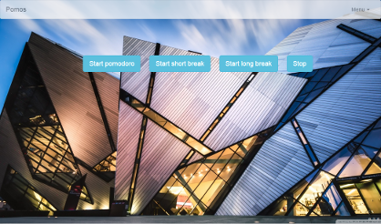
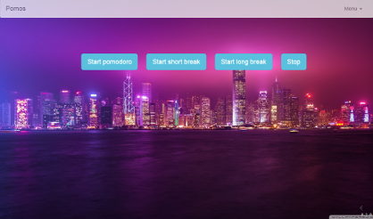
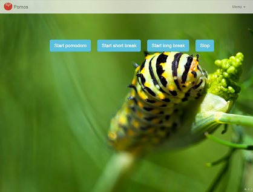
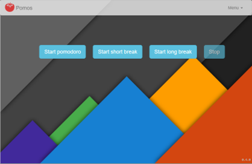

开始番茄钟
短暂停
长暂停
添加Note
停止
查看统计信息
修改主题
×
统计
已开始
已完成
已中断
百分比
外部原因
内部原因
番茄数
短暂停
-
长暂停
-
×
主题
主题路径
空为使用默认主题

用这个 Modern

用这个 City
来源:
flickr

用这个 Caterpillar
来源:
material design wallpapers

用这个 Material
×
总结
看上去你完成了一个番茄钟， 是吗？
这里是你写的一些Note:
这个番茄钟标记为：
×
Notes
添加Notes: